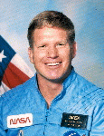

Lyndon B. Johnson Space Center
Houston, Texas 77058
|
National Aeronautics and Space Administration Lyndon B. Johnson Space Center Houston, Texas 77058 |
 |
Biographical Data |
||
William M. Shepherd (Captain, USN, Ret.)
NASA Astronaut (former)
PERSONAL DATA: Born July 26, 1949, in Oak Ridge, Tennessee, but considers Babylon, New York his hometown. Married to Beth Stringham of Houston, Texas. He enjoys sailing, swimming, and working in his garage. His mother, Mrs. Barbara Shepherd, resides in Bethesda, Maryland. His father, Mr. George R. Shepherd, is deceased.
EDUCATION: Graduated from Arcadia High School, Scottsdale, Arizona, in 1967; received a bachelor of science degree in aerospace engineering from the U.S. Naval Academy in 1971, and the degrees of ocean engineer and master of science in mechanical engineering from the Massachusetts Institute of Technology in 1978.
ORGANIZATIONS: American Institute of Aeronautics and Astronautics (AIAA).
SPECIAL HONORS: Recipient of NASA’s "Steve Thorne" Aviation Award.
EXPERIENCE: Shepherd was graduated from the U.S. Naval Academy in 1971, and has served with the Navy’s Underwater Demolition Team ELEVEN, SEAL Teams ONE and TWO, and Special Boat Unit TWENTY.
NASA EXPERIENCE: Selected by NASA in May 1984. A veteran of four space flights, Shepherd has logged over 159 days in space. Most recently, he was the Commander of the Expedition-1 crew on the International Space Station (October 31, 2000 to March 21, 2001). Earlier he made three flights as a mission specialist on STS-27 (December 2-6, 1988), STS-41 (October 6-10, 1990) and STS-52 (October 22 to November 1, 1992). From March 1993 to January 1996, Shepherd was assigned to the Space Station Program and served in various management positions.
Shepherd left NASA in January of 2002 to pursue private interests.
JANUARY 2002
{kind=link}